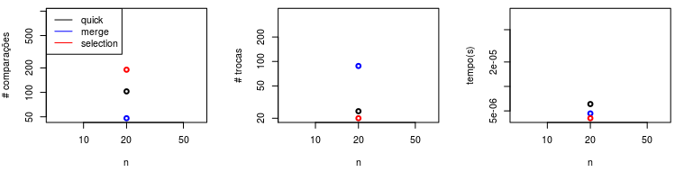

APS3 - Algoritmos de ordenação
Contato
- Jean Paulo Martins (jeanmartins utfpr edu br)
- Sala 105, Bloco S (UTFPR - Campus Pato Branco)
Conteúdo
- Objetivos
- Motivação
- Experimentos
- Cenários de experimentação
- Experimentos
- Análise dos resultados
- Nomenclatura de arquivos
Objetivos
Comparar experimentalmente os algoritmos de ordenação em diferentes cenários. Identificar a relação entre os tipos de entradas e a eficiência desses algoritmos.
Motivação
Aprender a identificar qual algoritmo utilizar para ordenação de dados em um determinado contexto.
Experimentos
Todos algoritmos deverão ser executados para os mesmos casos de teste e depois comparados quanto ao
- tempo médio,
- número de comparações,
- número de trocas
Deste modo, a primeira etapa do trabalho consiste em adaptar seus códigos para que a cada execução esses três dados sejam coletados/contabilizados.
Cenários de experimentação
Os algoritmos serão avaliados em quatro cenários. Cada cenário representará um tipo de sequência de entrada.
- Sequências aleatórias,
- Sequências ordenadas de forma crescente
- Sequências ordenadas de forma decrescente
- Sequências quase ordenadas
Consideraremos que uma sequência quase ordenada é gerada por dois passos principais.
- Gerar uma sequência ordenada,
- Efetuar um certo número de trocas aleatórias - O número de trocas deve equivaler a 15% do tamanho da sequência.
Experimentos
Cada um dos cenários acima serão avaliados seguindo o mesmo planejamento de experimentos. Como exemplo, podemos considerar o caso de sequências aleatórias.
Queremos avaliar o desempenho dos algoritmos para sequências de tamanhos diferentes, então neste contexto a primeira etapa seria definirmos quais tamanhos de sequências farão parte dos experimentos. É importante que possamos avaliar os algoritos em sequências pequenas e grandes, portanto os tamanhos utilizados devem atender essa demanda.
Sugestão de tamanhos $n(x) = 10 \times 2^x$.
| $x$ | 1 | 2 | 3 | 4 | 5 | 6 | 7 | 8 | 9 | 10 | 11 | 12 |
| $n$ | 20 | 40 | 80 | 160 | 320 | 640 | 1280 | 2560 | 5120 | 10240 | 20480 | 40960 |
Os experimentos terão que ser repetidos para cada $n$.
Vamos assumir, como exemplo, o caso de $n=20$. Cada algoritmo deverá ser executado em sequências de tamanho $n$, porém, como estamos estamos interessados no comportamento médio do algoritmo, não podemos executá-lo apenas uma vez. Deste modo, cada algoritmo deverá ser executado um determinado número $N$ de vezes com sequências diferentes de tamanho $n$, $N$ é chamado número de experimentos.
Sugestão para o número de experimentos $N$: $30 \leq N \leq 100$.
Cada execução de um algoritmo A com as sequências aleatórias (rand) de um determinado tamanho $n$ (20), produzirá três dados:
- num. comparações,
- num. trocas,
- tempo.
17823812 123213 0.2345
O conjunto de $N$ execuções produzirá então, um arquivo de saída rand_20_A.out, com $N$ linhas, cada uma delas representando um experimento.
17823812 123213 0.2345
17823812 123213 0.2345
...
17823812 123213 0.2345
17823812 123213 0.2345
Suponha que estejamos comparando quatro algoritmos: A, B, C, D. Ao repetirmos o procedimento acima para cada um deles, teremos produzido quatro arquivos:
rand_20_A.outrand_20_B.outrand_20_C.outrand_20_D.out
Tais nomes foram escolhidos pois são informativos sobre o experimento que eles representam. O prefixo rand indica que a sequência foi gerada aleatoriamente, o infixo 20 indica o tamanho dessas sequências, e o sufixo A, indica o algoritmo.
Análise dos resultados
Esses arquivos contém os dados brutos dos experimentos. Podemos a partir deles iniciar a análise dos resultados. Primeiro passo é calcular a média de cada coluna. No exemplo, acima, a média de cada coluna em cada um dos arquivos produzirá três valores.
rand_20_A.out, média das colunas:17823812 123213 0.2345rand_20_B.out, média das colunas:89898923 1342213 2.2345rand_20_C.out, média das colunas:123812 123213 9.2345rand_20_D.out, média das colunas:948812 99213 11.2345
Com esses novos valores (médias), podemos inciar a popular nossos gráficos, um para cada dado sendo avaliado. Nos gráficos abaixo inserimos os pontos referentes aos valores médios de comparações, trocas e tempo obtidos para sequências crescentes de tamanho $20$. Portanto, todos os pontos ficam na mesma coluna ($n=20$).

Ao efetuarmos esses mesmos experimentos mas agora com os demais tamanhos de sequência, teremos vários outros pontos para popular o gráfico, indicando o comportamento dos algoritmos com os diferentes tamanhos de sequência. As linhas pontilhadas são as referências teóricas de complexidade $O(n), O(n \log n)$ e $O(n^2)$ (da menos inclinada à mais inclinada).
Nomenclatura de arquivos
Minha sugestão para que tenhamos um padrão de nomenclatura e organização dos arquivos da APS3 é a seguinte:
- Crie um diretório (pasta) de nome igual ao seu RA: “227728/”
- Dentro desse diretório insira seus códigos fonte, que deverão ter como prefixo seu “RA_”:
-
Caso tenha implementados todos em um mesmo arquivo, nomeie este arquivo como “RA_sort.c”
- Os arquivos produzidos para os experimentos ficarão em um subdiretório chamado “output”, exemplo:
- “227728/output/”
- Para os arquivos dos experimentos, sugiro o padrão de nomenclatura: “cenario_tamanho_algoritmo.out”
- Para “cenário”, temos quatro tipos possíveis:
- “rand”: sequências aleatórias
- “cres”: sequências aleatórias crescentes
- “decr”: sequências aleatórias decrescentes
- “semi”: sequências aleatórias semi-ordenadas
- Para “tamanho”, temos os valores indicados na tabela no início deste documento
- Para “algoritmo”, temos várias possibilidades, como as descritas a seguir.
- Mergesort: “merge”
- Quicksort: “quick”
- Selectionsort: “selct”
- Insertionsort: “insrt”
- Bubblesort: “bubbl”
- Heapsort: “heaps”
Esses padrões de nomenclatura nos dão uma melhor organização, e me permite automatizar a verificação de suas submissões, o que se torna inviável caso contrário.